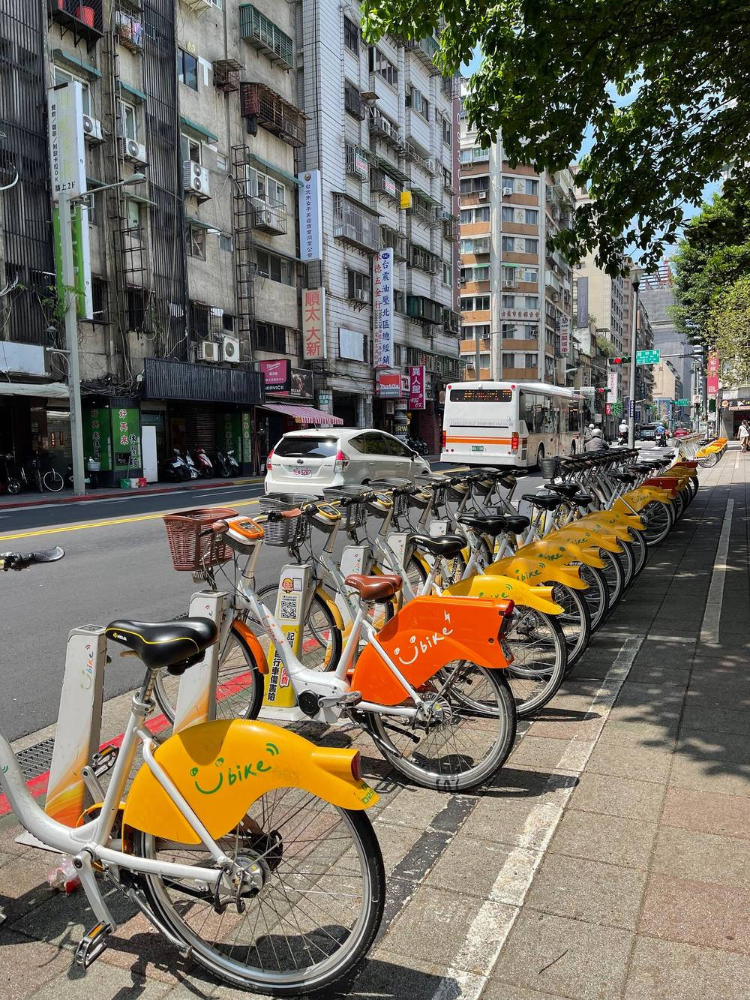

가오슝·타이난 유바이크, 여행자는 어떻게 빌리고 얼마 낼까?
대만 번호가 없어도 탈 수는 있어요 — 다만 결제 방식에 따라 할인과 카드 한도가 달라져요.
게시
"가오슝 유바이크, 관광객도 그냥 빌릴 수 있나요?" 가오슝 유바이크와 타이난 유바이크는 일반 자전거 YouBike 2.0과 전기보조자전거 YouBike 2.0E를 함께 운영해요. 여행자는 신용카드로 한 번씩 빌리는 '단회 대여'와 회원 가입 중에서 고르게 됩니다. YouBike 공식 요금표와 대만 교통 법규를 바탕으로 정리해봤어요.
01 · 가오슝 유바이크 요금 한눈에 보기
| YouBike 2.0 | YouBike 2.0E(전기보조) | |
|---|---|---|
| 기본 요금 | 4시간 이내 30분당 NT$10 | 첫 2시간 30분당 NT$20 |
| 그 이후 | 4~8시간 30분당 NT$20, 8시간 초과 NT$40 | 2시간 초과 30분당 NT$40 |
| 가오슝 회원 보조 | 첫 30분 NT$5 | 첫 30분 NT$10 |
| 단회 대여 | 기본 요금, 보조 없음 | 기본 요금, 보조 없음 |
30분이 안 돼도 30분으로 계산하고, 타이난도 기본 요금은 같아요(2026년 10월 기준). 보조금은 시 정부 공고에 따라 끝날 수 있어요.
02 · 단회 대여와 회원 가입, 뭐가 다를까?
단회 대여(單次租車) YouBike 앱에서 이메일 인증 후 신용카드(VISA·Master·JCB)를 등록하고 자전거의 QR코드를 스캔해 빌려요. NT$3,000이 사전 승인되고, 정상 반납하면 120시간 승인 기간이 끝난 뒤 자동 취소돼요. 한도가 돌아오는 시점은 카드사 영업일에 따라 달라요.
회원 가입 문자 인증용 대만 휴대폰 번호와 여권 번호가 필요하고, 이지카드(悠遊卡)나 이카통(一卡通)을 등록해 태그로 빌려요. 실명 정보를 넣으면 첫 번째 카드는 공공자전거 상해보험에 자동 가입돼요.
보험 먼저 단회 대여 안내에도 타기 전에 공공자전거 상해보험을 등록하라고 적혀 있어요.

03 · 가오슝은 이카통 환승 할인이 쏠쏠해요
회원이 이카통으로 가오슝 MRT·경전철·버스·페리·대만철도를 탄 뒤 1시간 안에 카드를 태그해 빌리면, 2.0은 첫 30분이 무료이고 2.0E는 NT$5가 더 보조돼요. 이 할인은 카드 태그 대여에만 적용되고 이지카드는 해당되지 않아요. 타이난은 TPASS 정기권 소지자에게 첫 30분 무료 혜택이 있어요.
04 · 타기 전에 알아둘 주행 규칙
차도 오른쪽으로 대만 법규상 자전거는 서행 차로(慢車道)에서 오른쪽으로 달리고, 서행 차로가 없으면 도로 오른쪽 가장자리로 다녀야 해요.
인도는 표지가 있을 때만 자전거 표지·표선이 있는 인도만 달릴 수 있고, 아케이드(騎樓)는 안 돼요. 위반하면 NT$300~1,200 벌금이에요.
헬멧은 직접 유바이크는 헬멧을 빌려주지 않아요.
"유바이크는 30분 단위로 계산하니, 짧게 끊어 타고 거치대에 반납하는 습관이 요금을 아껴줘요." — 공식 요금표를 바탕으로 정리한 한 줄 요약입니다.
자전거로 돌 동선을 정했다면 먹을 곳도 함께 보세요. 가오슝 맛집 지도에서 가오슝 카페 맛집 중 신촨 원앙 밀크티를 쉬어 가는 곳으로 넣고, 타이난에서는 타이난 맛집 지도와 타이난 국수 맛집의 샤오공위엔 담자면도 확인해보세요. 일정 전체가 고민이라면 가오슝 3박4일 부모님 일정 글도 참고해보세요.
지도에서 타이난 맛집을 찾아보세요
유바이크로 들르기 좋은 타이난 식당을 지도에서 확인해보세요.